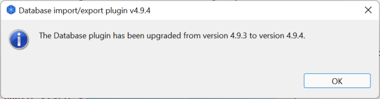

The plugin is available on Github at the following address: https://github.com/archi-contribs/database-plugin/tree/master/v2
Please download the org.archicontribs.database_4.9.4.archiplugin file.
The easiest way to install the plugin is to use Archi's integrated mechanism which is accessible through the Help / Manage Plug-ins... menu:
The Manage Archi Plug-ins window displays all the plugins installed in Archi. The procedure works the same to install a new plugin or update an existing plugin. Please click on the Install New ... button:
Please select the archiplugin file you've downloaded previously.
To complete the plugin installation, Archi needs to be restarted. Please click on the Yes button to restart Archi immediately, or press No if you prefer to restart later on.
Once Archi restarts, a welcome message indicates if the plugin has been correctly installed:
Or upgraded:

To update the plugin to a newer version, you may follow the same procedure used to install the plugin (ie download a new version of the archiplugin file and install it through Archi's Manage plugin-ins mechanism.
Alternatively, if your computer has got a direct access to the Internet, the plugin is able to automatically download updates from Github and install them. To activate this mechanism, please refer to the Version section of the preferences help page.